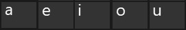
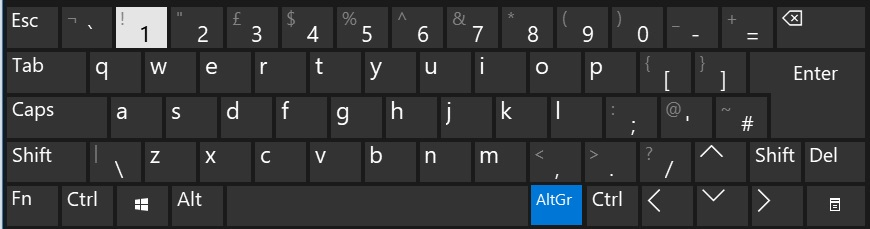

Acute Accent (´)
Apostrophe key followed by the vowel


Cedilla Accent (¸)
Apostrophe key followed by 'c' key

Circumflex (^)
Circumflex key followed by the vowel

Diaeresis/Umlaut (¨)
Ctrl + Alt + colon/semi-colon key pressed at the same time followed by the vowels
or
AltGr + colon/semi-colon key pressed at the same time followed by the vowel

Grave (`)
Grave key followed by the vowel

Inverted Question Mark (¿)
Even though is not a proper portuguese accent, it might be useful to have it easily accessible.
Ctrl + Alt + question mark/foward slash key pressed at the same time
or
AltGr + foward slash/question mark key pressed at the same time

Inverted Exclamation Mark (¡)
Ctrl + Alt + 1/exclamation mark key pressed at the same time
or
AltGr + 1/exclamation mark key pressed at the same time
